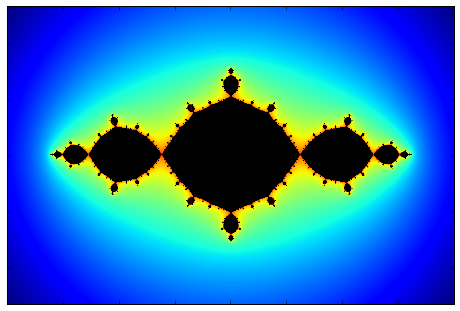
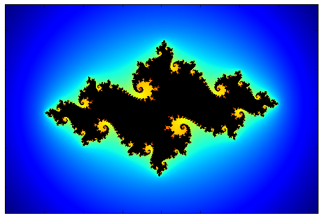
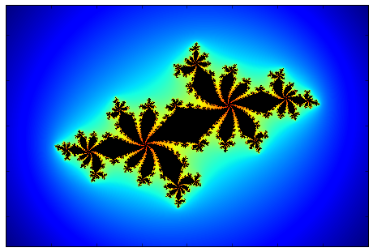
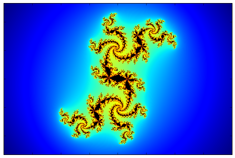
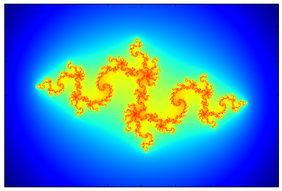
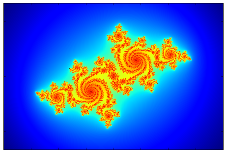
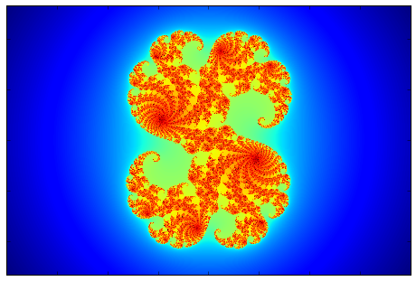
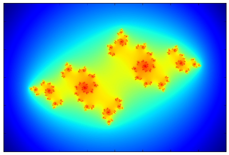

Julia sets
Consider the following "game" where given a complex valued function $f(z)$ and some point in the complex plane $z_0$ we generate a set of numbers $z=\{z_0,f(z(0)),f(f(z_0)),..\}$ which is given by the rule $z_{n}=f(z_{n-1})$. This describes a discrete dynamical system over the complex field. A possible question to ask regarding this process is whether it is bounded $(\exists M$ such that $f^n(z_0) \lt M, \forall n)$ or not. The set of all points $z$ for which the dynamical process described is bounded, is called the filled Julia set of f. The boundary of the filled Julia set is called the Julia set of f. Named after the French mathematician Gaston Julia.The reason I decided to write about these sets is that they typically draw beautiful and complex fractals in the complex plane.
The procedure for plotting the resulting Julia set for a given $c$ is to consider a region in the complex plane with a given number of pixels (width x height) where each pixel is a number in the complex plane. Then by going over each pixel in the region, and applying the function $N$ times, we check each time if the resulting complex number has an absolute value greater than some escape radius $r_{esc}$ (2 is enough), in this case we can be certain that this initial $z_0$ will escape to infinity under $f$ and that $z_0$ is not in the Julia set. If we reached N without having $|z|\geq r_{esc}$ then it is possible that $z_0$ is in the set. We can't be certain, but if we choose $N$ big enough, then the plot will be more accurate. Also by using a higher resolution (more pixels for a given region) Then more details will be visible in the plot.
One type of Julia sets is the one originating from the function $f(z)=z^2+c$ where $c$ is a constant complex number. Below I show a number of examples for different choices of $c$. The filled Julia set is in black, and the colors indicate the number of time or iterations of $f$ before a given $z_0$ escaped to infinity. This gives a nice visualization of the dynamical system. The Julia set itself is in the boundary between the black regions and the colored regions, where the inner region contains points which are bounded and are repelled from the boundary inwards, whereas the outer region is repelled from the boundary towards infinity.
An additional trick to make the images nicer, is to make the color scheme smooth. Since as described the coloring is based on the number of iterations required to reach the escape radius, this number is an integer, and we will get a step like coloring which is not very appealing. It is possible to have a mapping between the integer number of iterations to a real value which changes smoothly and allows the coloring to be continuous and smooth.
The images below show the region $x\in [-2,2],y\in [-1.33,1.33]$ for 8 different values of $c$. The filled Julia set is in black, and the colors going from red to blue indicate a decreasing number of iteration to reach to the escape radius which was chosen here to be $30$ as it also allows for a smoother transition of colors. In the bottom row, where there is no evident black filled region, it is because the points within the Julia set are along thin lines buried inside the other colored features (The Julia set is not connected in these cases), and therefore are not seen, and we only see a dark red color which indicates a large number of iterations required to reach infinity, and this is close to the Julia set.
| $c=-1$ | $c=-0.81+0.1795i$ | $c=-0.62772+0.42193i$ | $c=0.300283+0.48857i$ |
|  |  |  |  |
| $c=-0.835-0.2321i$ | $c=-0.513+0.5212i$ | $c=0.285+0.013i$ | $c=0.285+0.013i$ |
|  |  |  |  |
{kind=link}
{kind=link}
{kind=link}
{kind=link}
{kind=link}
{kind=link}
{kind=link}
{kind=link}
Examining the various Julia sets, we can notice that in some cases the filled Julia set is connected and in some disconnected. One can ask for what values of $c$ is the Julia set connected. The set of numbers $c$ for which the Julia set is connected is called the Mandelbrot set, named after the mathematician Benoit Mandelbrot. There is a theorem which states that for a given $c$, the corresponding Julia set of $f$ is connected if $z=0$ is in the filled Julia set of $f(z)=z^2+c$, and disconnected otherwise. This allows to obtain the Mandelbrot set by varying $c$ over the complex plane and starting with $z=0$, check whether the process diverges or not, if not than $c$ is in the Mandelbrot set as it was defined.
{kind=link}
The images were created using Python and the code can be found here.